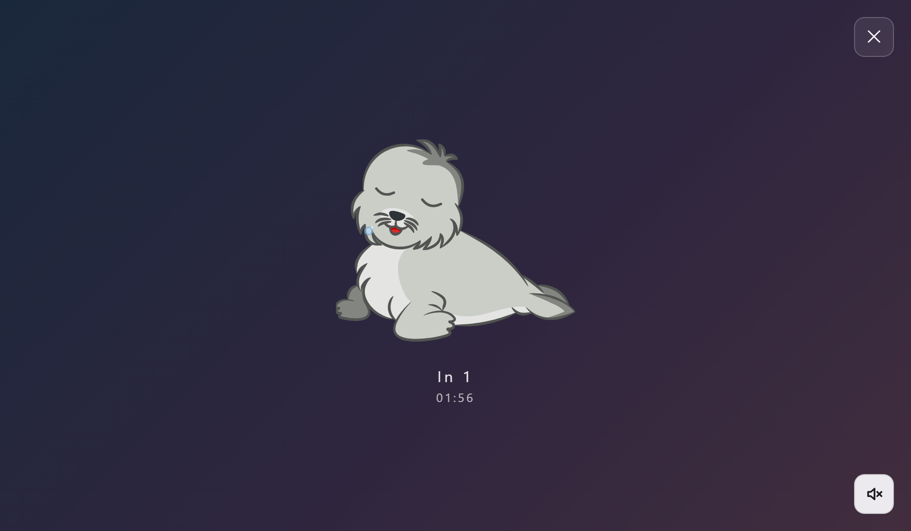
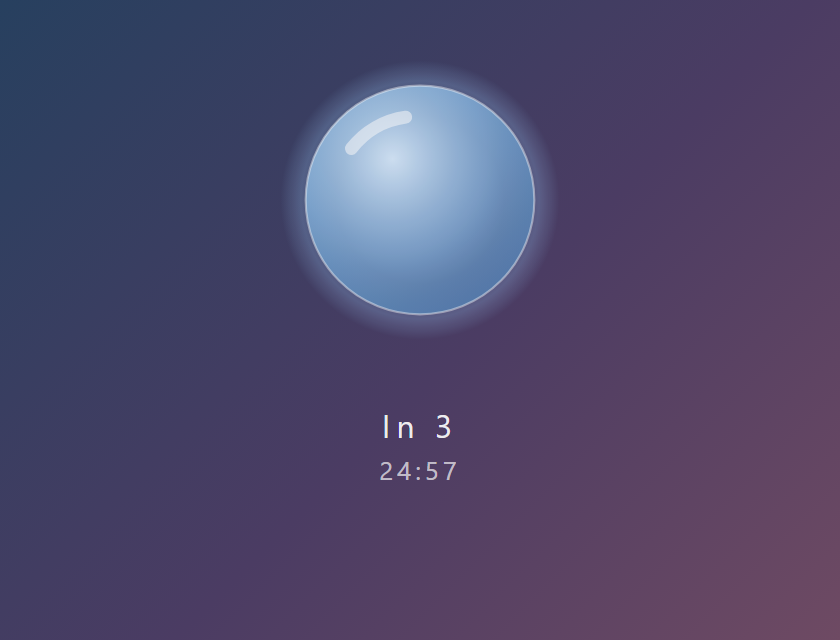
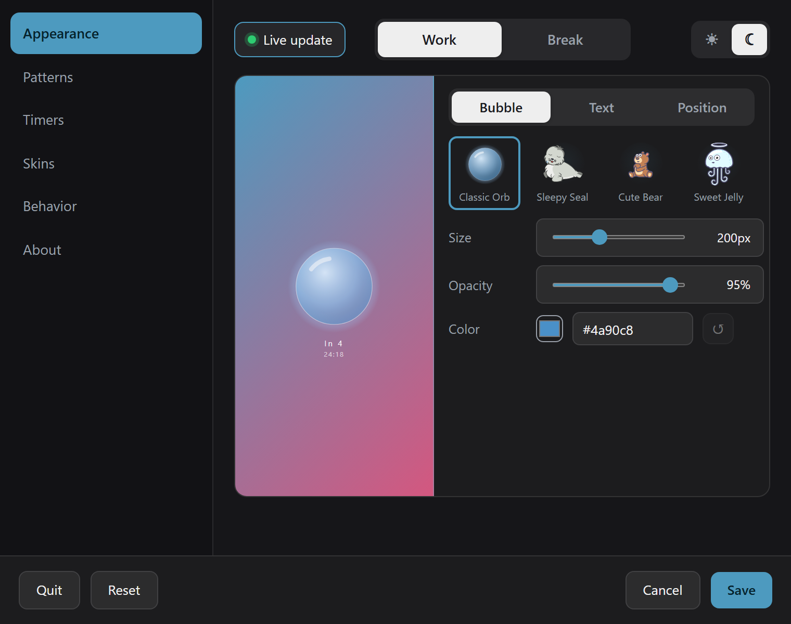

A small bubble in the corner of your screen breathes slowly while you focus. When it's time for a break, it helps you take a few calm breaths.

BreathPause combines a focus timer with guided breathing. It stays out of your way until you need it.
The bubble sits on top of your windows, but clicks pass straight through it. It breathes slowly and shows how much focus time is left. Hover over it to move it, change it or hide it.

When the timer runs out, the screen softens and the bubble grows. Breathe along for a few minutes: in when it grows, out when it shrinks. If you really need to get back early, press Esc.
Pick a look, a size and a color, and see every change in the bubble right away. Set your own focus and break times, and choose different looks for work and for breaks.

Three well-known patterns are built in. Use one for focusing and another for breaks, or build your own from inhale, hold and exhale.
Slow, even breaths, about five a minute. Easy to follow while you keep working.
In, hold, out, hold, four seconds each. Steady and simple to remember.
A long hold and an even longer exhale. Good for winding down on a break.
Free, no account needed. Installed copies keep themselves up to date.
For Windows 10 and 11. Installs for your user only, no admin rights needed.
{{WIN}}One download for Apple Silicon and Intel Macs. Open it and drag BreathPause into Applications.
{{MAC}}BreathPause isn't code-signed yet, so the first launch shows a warning. On Windows, click More info → Run anyway. On a Mac, right-click the app and choose Open. Older versions are on GitHub.
Yes. BreathPause is open source under the MIT license, with no ads, subscriptions or paid features.
No. There's no account and no tracking. The only time it goes online is a once-a-day check for a new version, which you can turn off in Settings › Behavior.
The app isn't code-signed yet: that's a paid certificate that tells your system who made it. The code is public on GitHub, and every download is built there automatically from that code.
It's small, and clicks pass through it to whatever is underneath. You can make it smaller or see-through, move it anywhere, or hide it from the tray icon or with a shortcut.
Yes. Press Esc or the ✕ in the corner and confirm. You can also pause the timer, or set a shortcut to skip ahead.
Not yet. Many Linux desktops don't let an app place itself on the screen the way the bubble needs to, so it needs more work first.
On Windows, use Settings › Apps like any other program; for the no-install version, just delete the file. On a Mac, drag BreathPause from Applications to the Trash.